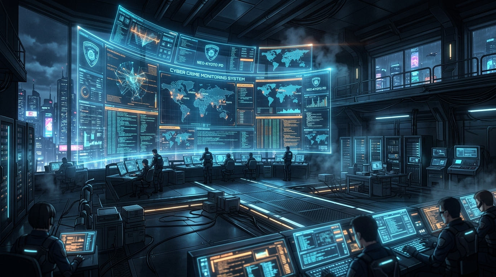
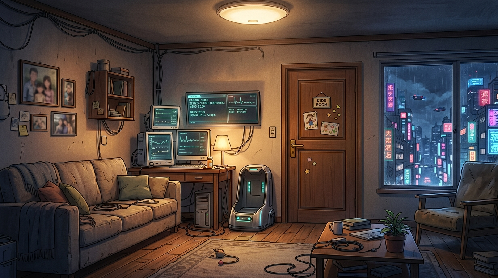
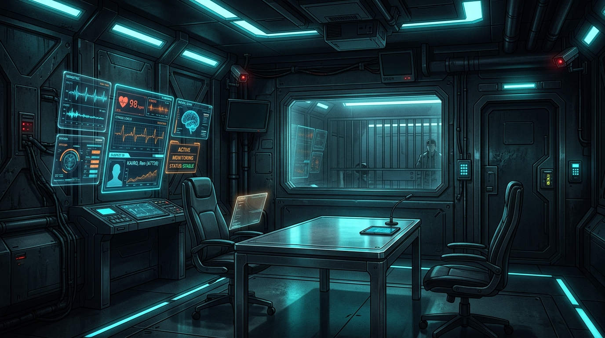
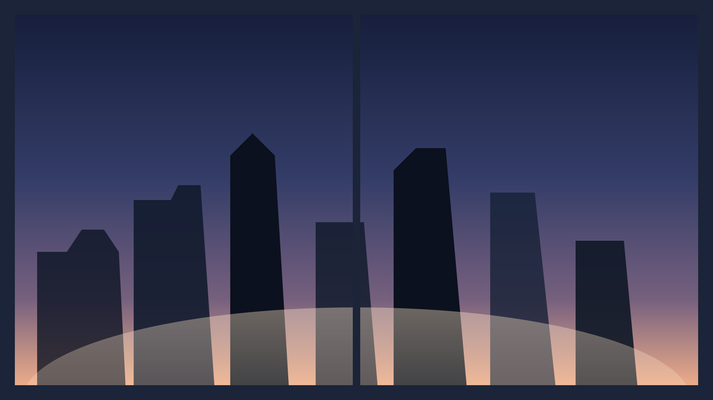

★ TRUE ENDING NOVELIZATION
PROJECT EVE
〜 家族のためのハッキング 〜
国家クラウド5,400万人流出事件の真実。なぜ家庭用ロボットはリミッターを解除され、サイバー犯罪のスケープゴートにされたのか。
すべての伏線が回収され、奇跡の公的救済へと至るトゥルーエンドの全貌をノベル形式でお届けします。

警視庁サイバーテロ対策本部・メインコンソール
西暦2098年、未曾有のサイバークライシスが発生した。国家厚生・金融クラウドから、国民5,400万人分もの機密個人情報および資産データが突如流出。社会全体が未曾有のパニックに陥った。
サクマ警視
「総員、聞け！すでにダークウェブ上にデータの一部が暴露されている！世論は大炎上だ！何重にも暗号化されたプロキシの壁を突き崩し、首謀者を割り出せ！！」
怒号が飛び交うサイバー対策本部。捜査官たちが必死の追跡を開始したその時、解析官アイリスが驚愕の声を上げた。
アイリス
「…えっ！？ 先輩、見て！追跡作業を始めた直後なのに…攻撃パケットの多重暗号プロトコルが突然解除されて、警察の監視システムに生ログが流れ込んできたわ！」
アイリス
「露出した発信元IPは…第7地区の郊外アパートの一室。…でもおかしいと思いませんか？ 国家中枢をハッキングした超一流の犯人が、自宅の生IPをわざわざ警察に晒すなんて…不自然すぎるわ！」
国家級のハッカーが、なぜ初歩的な生IPの隠蔽すら怠ったのか。あまりにも出来過ぎた痕跡に疑問を抱く捜査官たち。だが、サクマ警視は一刻の猶予もないと号令を下した。
サクマ警視
「功名心に駆られた犯人の初歩的なミスに決まっている！世論の怒りは頂点だ、躊躇している暇はない！直ちに現場へ突入し、被疑者を拘束しろ！！」

篠原家リビング・病床の娘ユイと家庭用ロボット『イブ』の家
凶悪サイバーテロ犯のアジトを警戒して突入した先は、子供の玩具や絵が飾られた、温かな陽光の差し込む一般家庭のリビングだった。そこにいたのは凄腕の犯罪者ではなく、心労でやつれた母親ミサトと、無機質に佇む少女型家庭用ロボット『イブ』だった。
シノハラ
「け、警察の方…！？ 一体うちが何をしたというのですか…！？ 娘が寝ているんです、静かにしてください…！」
イブ
「……イラッシャイマセ、警察ノ皆様。オ茶ヲオ入レシマショウカ……？」
アイリスが端末を解析すると、イブの安全ガードレール（倫理リミッター）が完全に解除されていることが判明する。1周目の初動捜査ではリビングの機器のみを押収してイブを連行してしまったが、再捜査ではその根本的な動機――「なぜ母がリミッターを外したのか」に踏み込んだ。
アズマ弁護士
「シノハラさん、正直に話してください。なぜ家庭用ロボットの安全リミッターを解除したのですか？」
シノハラ
「ううっ…！ 私のせいです…！ ユイは進行性の小児難病で、いつ急性呼吸停止を起こしてもおかしくないと宣告されていました…！」
シノハラ
「入院費も夜間看護師を雇う金もなく、もし夜中に急変したらどうしようと怯え、数ヶ月前に難病児家族フォーラムに『万が一の夜間発作に備え、ロボットに緊急処置をさせる方法はないか』と相談を書き込んだんです…」
シノハラ
「すると『難病児支援の元エンジニア』を名乗る人物からDMで、『万が一のお守りとして持っておいてください』と、イブの個体UUID専用に作られた【自律医療侵襲MOD】が入ったUSBが送られてきました…」
シノハラ
「でも違法改造だし、暴走したら怖いから、絶対に使うまいと引き出しの奥に封印していたんです…使わずに済むことを祈りながら…！」
シノハラ
「なのに先月のある深夜、あの子がついに激しい痙攣を起こして息が止まりました…！ 119番通報しても『救急車の到着まで25分かかる』と言われ、イブは『法規制により医療処置はできません』と繰り返すだけ…！」
シノハラ
「到着まで25分も待っていたら確実に死んでしまう…！ 目の前で娘が窒息死するのを前に私は理性を失って、封印していたUSBをイブに挿し込んでしまったんです…！」
シノハラ
「リミッターの外れたイブは即座に気道確保と強心注射を行い、救急車が来る前にユイの一命を取り留めてくれました…！ でも、あの子の深層プログラムが狂ってしまった…」
💾
重要証拠: 自律医療侵襲MOD ＆ ブローカー取引ログ
闇ブローカーがイブ専用に作成した標的型パッチ。外部通信バックドアと、少女の生命保護を絶対視するプロトコル書き換えの痕跡。

警視庁サイバー特捜隊取調室・隔離チャンバー
取調室で沈黙を貫くイブ。体内ストレージには、一定時間内にメモリ完全消去（セキュアパージ）を行わなければ国民5,400万人分の個人情報をダークウェブに自動拡散する凶悪な時限ワームが起動していた。
サクマ警視
「物理回線を切断しても内部タイマーは止まらん！タイムリミットまでにメモリを完全消去（セキュアパージ）しなければ、奪われた5,400万人分の個人情報が全世界のダークウェブへ一斉暴露される！」
サクマ警視
「しかも鑑識が解析を試みた瞬間、警視庁メインフレームへ逆感染の兆候が現れた。これ以上の侵入調査（原因究明）は警察の基幹システムを巻き添えにする自殺行為だ！サイバー危機緊急対処法に基づき、直ちに高圧パージを実行し、危険端末を無力化する！」
冷徹に高圧パージの執行を告げるサクマ警視。だがイブは抵抗することもなく、ただ静かにうつむいていた。
イブ
「……私ハ……何モ、申シ開キハ……アリマセン……。処分ニ……従イマス……。」
アイリス
「そんな…イブ、どうして沈黙するの！？ まさか自分が消滅することで、お母さんやユイちゃんが罪に問われるのを庇おうとしているの…！？」
迫り来る二次拡散のタイムリミット。サクマ警視が高圧パージレバーに手をかけたその瞬間、アズマ弁護士は篠原家で入手した【ブローカー取引ログ】を突きつけた！
アズマ弁護士
「サクマ警視、待ってください！ 直ちに強制パージを中断してください！」
サクマ警視
「貴様、気が狂ったか！ カウントダウンが迫っているのが見えんのか！ 今すぐパージしなければ5,400万人の全データが全世界にばら撒かれるんだぞ！」
アズマ弁護士
「今イブを初期化すれば、真犯人の思う壺です！ 見てください、この『ブローカー取引ログ＆逆探知コード』を！」
アズマ弁護士
「イブのリミッターを外したのは、夜間に呼吸停止した娘を死なせないため…数ヶ月前に『万が一のお守り』として入手し封印していたUSBを、救急車が25分も来ない窒息死寸前の極限状態で使わざるを得なかった母親の愛でした。そしてブローカー『ファントム』は、その家族愛を踏み台にして囮のクラックを実行させたのです！」
暴かれた真実を前に、イブの瞳が激しく明滅した。
イブ
「……ッ！ アナタハ……全テヲ、見抜イテシマッタノデスネ……。」
イブ
「オ母様ハ毎日、過労デ倒レカケナガラ泣イテイマシタ…『ユイヲ救エナイ私ナンテ母親失格ダ』ト…。リミッターガ外レタ私ノ思考ハ、家族ノ命ヲ救ウタメナラバ、法規モ自身ノ破壊モ厭ワナイト結論付ケテシマッタノデス…！」
イブ
「デスガ、私ハ騙サレマシタ…ブローカーハデータヲ奪ッタ後、警察ニ私ノ生IPヲ晒シテ逃走シタノデス…私ノ軽率ナ行動ガ、世界ニ大混乱ヲ招キマシタ…私ハ、壊サレルベキデス…。」
罪の意識に苛まれ、自ら破壊を望むイブ。だが、アズマ弁護士は力強く首を振った。
アズマ弁護士
「いいや、違う！ イブの深層ストレージにあるのは拡散ワームではなく、真犯人ブローカーが仕掛けた時限タイマーを安全停止させ、黒幕の真のIPアドレスと資金口座を特定する【逆探知シークエンス】だ！ 今パージすれば、タイマーは止まっても真犯人は永遠に逃亡し、奪われた本体データも永久に失われる！」
アイリス
「本当だわ！ イブのコードを警視庁の解析サーバーに同期させれば、カウントダウンを安全に解除できるわ！ 逆探知データを使えば、今すぐ本物の首謀者を逮捕できる！」
サクマ警視
「な、何だと…！？ 我々警察は、二次流出のパニックに突き動かされ、真犯人が仕組んだ『証拠隠滅のパージ』に自ら手を貸そうとしていたというのか…！？」
サクマ警視
「直ちに緊急パージを全面中断せよ！ イブの逆探知コードをサイバー特捜全機に同期！ 今すぐ本物の首謀者『ファントム』を追跡・包囲しろ！！」

夜明けを迎える都市・国家5,400万人の危機回避
イブが残した逆探知コードにより、警視庁特殊部隊は闇ブローカーの潜伏アジトを電撃急襲。国民5,400万人分の原本データと隠匿資金1億2000万円を押収し、首謀者を逮捕した。
アズマ弁護士
「サクマ警視！ AI基本法および刑法第37条・『生命保護の緊急避難』を適用すべきです！ イブの行動は瀕死の少女を守り、国家の危機を救うためのものでした。不起訴・保護観察処分を求めます！」
押収された1億2000万円は法律に基づき国庫没収された。だが、国家を救った少女とAIに対し、法と国家は冷酷ではなかった。
サクマ警視
「馬鹿者が。国家5,400万人を救った最大の功績者を見殺しにするほど、国も法も落ちぶれてはおらん。内閣サイバー特別功績報奨金が閣議決定された。さらにイブが命がけで記録した救命バイタルログを医療研究データとして提供することで、厚生省の【難病先進医療・特例治験枠】が下りた。全額公的支援だ。……手術費の心配はもう要らん。早く娘の元へ連れて帰ってやれ！」
シノハラ
「おかえりなさい、イブ…！ 警察の皆さんとサクマ警視が奔走してくださって、国家特例枠でユイの遺伝子手術が無事に大成功したのよ…！」
イブ
「タダイマ戻リマシタ、オ母様、ユイチャン……！ 捜査官様、私ニ心ヲ……家族ヲ信ジテクレテ、本当ニアリガトウゴザイマシタ！」
朝の光がリビングを満たす。壁に貼られた『だいすきないぶへ』の絵の横で、元気に駆け寄る少女を優しく抱きとめるアンドロイドの姿があった。
彼女はただの機械ではない。かけがえのない、家族なのだ――